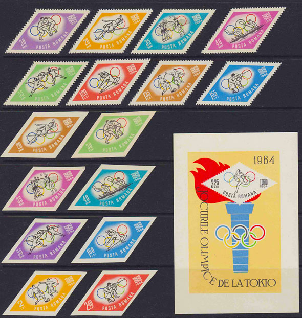
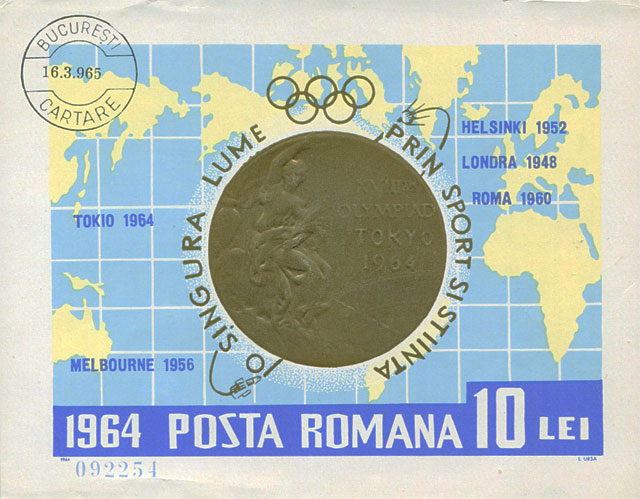
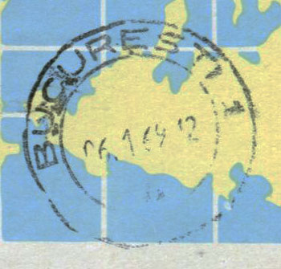
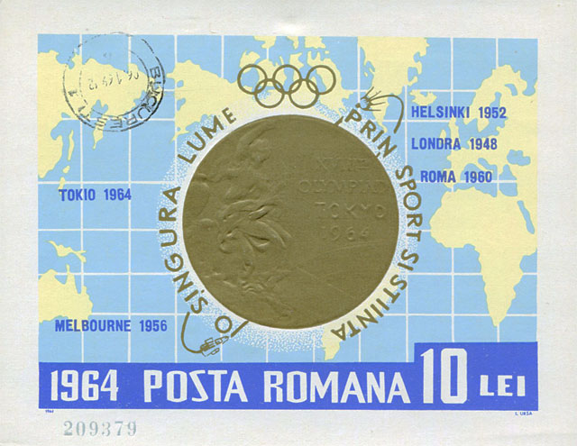

| O întâlnire, dupa 50 de ani, cu tineretea mea filatelica |
Victor Manta, PWO, AIJP
Cautand o informatie filatelica, am dat din întâmplare de site-ul lui eBay, iar acolo am cazut peste doua licitatii în care erau propuse doua dintre cele mai interesante emisiuni ale tineretii mele. Este vorba despre emisiunile Postei Române (PR), intitulate pe vremuri „Cosmonautii lumii” si „Olimpiada de vara din Tokio” si aparute în anul 1964, pe vremea când eram deja un colectionar cu ceva vechime si experienta, la cei 20 de ani ai mei.
Desi nu mai colectionez de o buna bucata de vreme marci postale românesti, nu m-am putut abtine si m-am lansat în „aventura”, câstigând ambele licitatii, de altfel la preturi destul de scazute.
Seturile câstigate astfel, pe neasteptate, într-o frumoasa dimineata de duminica, apar mai jos pe aceasta pagina. Dupa ce le-am câstigat însa, m-au navalit încetul cu încetul amintirile din acea perioada tulbure, de la care s-au scurs 50 de ani batuti pe muchie, amintiri pe care încerc sa le împartasesc cititorilor de toate vârstele.
Într-o perioada de numai un an PR a emis patru seturi care s-au deosebit de ceea ce emisese ea (cu duiumul, de altfel) atât pâna atunci, cât si dupa aceea. A fost vorba de seturi de 8 la 10 marci, dantelate si nedantelate (acestea din urma uneori în culori schimbate si cu alte valori), însotite de câte o colita nedantelata, în 3 cazuri din 4 numerotata. Public mai jos lista lor, preluata din catalogul Michel 2013, care are avantajul ca face cunoscute si tirajele respectivelor emisiuni:
1963, 25. Nov. Olympische Winterspiele (J.O. de iarna – VM), Innsbruck (1964). Odr. (1010); MiNr. 2195-2202 gez (dantelate). L 14, MiNr. 2203-2210 ungez (nedantelate). MiNr. 2211 (Block 55). Auflagen (tiraje): MiNr. 2203-2210 = 100 000 Sätze (serii), Bl. 55 = 100 000 numerierte Blocks
1964, 15. Jan. Weltraumfahrt (Zboruri spatiale). Odr. (1010); MiNr. 2238-2247 gez. L 14. MiNr. 2248-2257 ungez.. MiNr. 2258 (Block 56). Auflagen: MiNr. 2238-2257 = 250 000 Sätze, Bl. 56 = 250 000 numerierte Blocks
1964, 1. Sept. Olympische Sommerspiele, Tokio (J.O. de vara). Odr. (105); MiNr. 2309-2316 gez. 13, MiNr. 2317-2324 ungez. MiNr. 2325 (Block 58) . Auflagen: MiNr. 2309-2316 = 500 000, MiNr. 2317-2324 = 30 000 Sätze, Bl. 58 = 200 000 Blocks
1964, 30. Nov. Rumänische Goldmedaillengewinner bei Olympischen Spielen (câstigatori din RO de medalii de aur la J.O.). RaTdr. (57); MiNr. 2345-2352 gez. K 13, MiNr. 2353-2360 ungez. Auflagen: MiNr. 2345-2352 = 500 000, MiNr. 2353-2360 = 300 000 Sätze, Bl. 59 = 200 000 numerierte Blocks.

Au fost câteva elemente care au facut ca aceste seturi, cu tematici foarte atragatoare, si caracterizate prin forme geometrice si încadrari curajoase, sa se deosebeasca de alte emisiuni ale epocii, prin:
• numarul neobisnuit de mare de marci a fiecaruia dintre seturi si marimea (suprafata) marita a multora dintre marci si colite
• prezenta, pentru prima oara, a astronautilor americani, dupa ce ani de zile realizarile americane în domeniul cuceriri spatiului au fost ignorate pe marcile postale românesti. Steagul USA si culorile vii ale setului dedicat cuceririlor spatiale au reprezentat cu siguranta elemente deosebite de atractie pentru multi colectionari ai epocii, printre care ma numaram si eu. Pe atunci nu observasem ca americanii foloseau denumirea de astronauti, ceea ce facea ca denumirea oficiala a setului, cea de „Cosmonautii lumii”, sa nu fie tocmai corecta.
• faptul ca aceste seturi nu se vindeau la valoare faciala decât la abonati, câte unul pentru fiecare dintre ei. Cred ca abonatii, pentru ca sa poata sa faca un abonament, trebuiau sa fie si membri ai Asociatiei Filatelistilor Români, cu cotizatiile platite la zi. Îmi amintesc cu precizie numarul meu de membru al AFR, cel de 7019, obtinut în urma cu vreo 4 ani în raport cu anul 1964, numar care ne poate da o idee despre numarul de abonati din acea vreme la emisiunile PR. De altfel la ghiseele magazinelor filatelice din Bucuresti se facea foarte rar coada, ceea ce ne lasa timpul necesar, dar de prea multe ori insuficient, pentru cele de la magazinele cu produse alimentare.
• aceea ca aceste seturi au fost oferite de PR, scurt dupa emitere, si celor fara abonament, dar la pretul exorbitant de 120 lei / set. Cei 480 lei pentru cele 4 seturi reprezentau în acele vremuri cam 40% din salariul lunar al unui inginer stagiar aflat în primul sau an de activitate profesionala.
Aceasta crestere spectaculoasa de preturi, aproape de la o zi la alta (de exemplu pentru J.O. de la Tokio de la 16,85 lei la 120 lei, adica o crestere în valoare de 712%) nu a dus însa la îmbogatirea celor care le obtinusera în abonament, deoarece nu se gaseau amatori care sa le cumpere la acest pret. Scopul real, neanuntat ca de obicei, a fost acela ca filatelistii din România sa nu le trimita la schimb în strainatate, facând în acest fel concurenta întreprinderii românesti, desigur ca de stat, care se ocupa cu comercializarea productiei PR peste granitele tarii.
Privind mai atent catalogul Michel, se pun câteva întrebari interesante legare de tiraje si de preturi. Sa observam în trecere tirajele enorme pentru unele serii nedantelate, de exemplu de 250 000 pentru cosmonauti.
Una dintre întrebari suna în felul urmator: cum se face ca seria nedantelata J.O. de la Tokio, cu un tiraj de numai 30 000 de exemplare, nu este cotata mai bine decât celelalte serii nedantelate din celelalte 3 seturi? Aici as adauga observatia facuta de mine în perioada când seria respectiva se vindea la abonament, si anume ca „doamnele de la Filatelia”, nume generic sub care erau cunoscute angajatele magazinelor filatelice bucurestene, aveau mari probleme sa separe (manual, cu foarfecele) marcile romboidale, cu vârfuri foarte ascutite, din plansele mari de tipar în care erau livrate. În sertarele lor zaceau, din aceasta cauza, o multime de rebuturi, ceea ce ar fi trebuit sa duca la reducerea si mai mare a numarului seriilor respective.

Toate acestea duc imediat la întrebarea daca tiraje comunicate partenerilor ei si presei filatelice de catre PR au fost reale.
Un posibil raspuns îl putem gasi observând imaginile a doua colite din setul „Medalii olimpice”, ambele din colectia autorului prezentului articol, pe care le reproducem mai jos, cu detalii relevante. Prima dintre colite este obliterata (sau imprimata, o practica curenta) cu o preafrumoasa stampila BUCURESTI CARTARE, datata 16.3.965, si are numarul de serie 092251. Nimic deosebit nu este de semnalat la aceasta colita, prezentata doar spre comparatie, formatul de data respectiv putând fi gasit si pe alte materiale obliterate de complezenta.

Sa o vedem însa si pe cea de a doua colita, cu o urâta (stearsa) stampila BUCURESTI 1, purtând interesanta data de 06. 1 69 12, adica obliterata pe 6 ianuarie 1969, la peste 4 ani scursi de la emiterea colitei.

Sa acceptam aceasta data de obliterare, aplicata poate pe o colita ramasa nevânduta, care si-a asteptat cu rabdare ceasul, dar cum se explica atunci numarul de serie 209379, când conform catalogului Michel numerotarea ar fi trebuit sa se opreasca la valoarea de 199999?

Desigur ca o greseala de catalog nu poate fi exclusa, dar mi se pare putin probabila, acesta fiind si tirajul comunicat pentru colita J.O. de vara Tokio. Un alt raspuns, care mi se pare mult mai probabil, ar fi ca PR imprima si punea la dispozitie materialul ei filatelic în functie de cerintele de moment ale pietei, în special a celei din strainatate, fara sa se sinchiseasca prea mult de tirajele pe care tot ea le anuntase.
Aceasta ar putea sa fie si explicatia de ce tirajele mai scazute, anuntate de ea, nu au influentat neaparat cotele si de ce în general cererea în strainatate pentru marea majoritate a marcilor românesti din perioada 1960 - 1989 este astazi extrem de scazuta.
Faptul ca multe alte administratii postale din acea epoca, si ele în goana nebuna dupa valuta convertibila, au facut acelasi lucru, nu reprezinta o consolare si nu schimba situatia materialului care a invadat literalmente piata filatelica mondiala în perioada respectiva, atârnând greu si astazi în balanta, ca o mostenire de nelichidat si de neuitat a acelor vremuri.
Ce s-a întâmplat cu materialul emis de PR dupa 1989 ar putea conduce la o alta relatare plina de interes, pe care o las în sarcina celor au trait si traiesc în continuare evenimentele pe viu. Sa speram ca unii dintre ei vor împartasi amintirile lor, legate de cele mai interesante emisiuni tematice, cu o detasare câstigata prin trecerea altor 50 de ani, adica începând cu anul de gratie 2039.
Lower Manhattan, New York City, USA, oct. 2013
Notă: acest articol a apărut în ediţia imprimată a revistei filatelice din România philatelica.ro, No. 6 (29), noiembrie - decembrie 2013